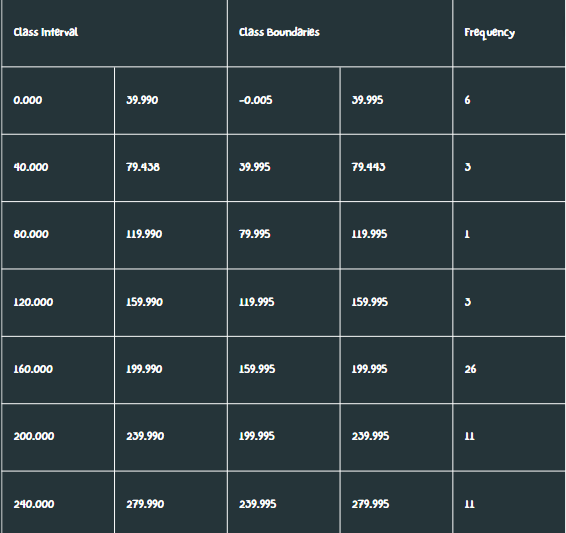
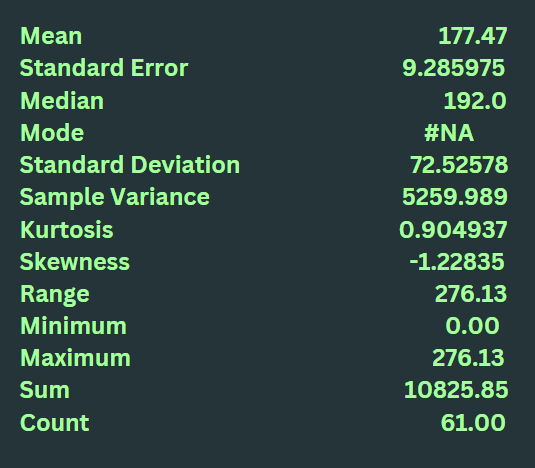
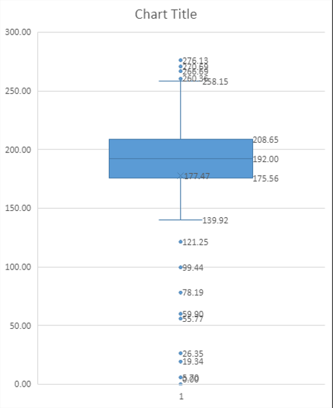

Summary Statistics
Quality time with your partner is essential for maintaining a strong and healthy romantic relationship. It allows you to nurture emotional bonds, deepen your connection, and build trust. Regularly spending time together helps keep the relationship vibrant, fulfilling, and resilient, ensuring both partners feel loved and supported. This page shows the average time spent(in minutes) throughout our life.
Frequency data table:
Descriptive analysis:
The mean is 177.47. The median is 192.00. The standard deviation is 72.52578. From this, we can interpret that from the 61 respondents, most respondents spend an average of 177.47 minutes with their partner. This time, both mean and median are more appropriate to report because both values represent the average amount of time spent with their partner. And as per observation and analysis, the standard deviation is high, which would again indicate a high level of difference in the data set. It is also observed in the graph as to how the data is spread out in relation to the two points mentioned above.
Box and Whisker plots:
The skewness is -1.23. The 1st quartile is 175.56. The median is 192. The 3rd quartile is 208.65. The shape of the distribution of time spent alone is asymmetrical and negatively skewed or skewed to the left. There are multiple outliers that were observed, and most data observed were spread out with an IQR of 33.09.